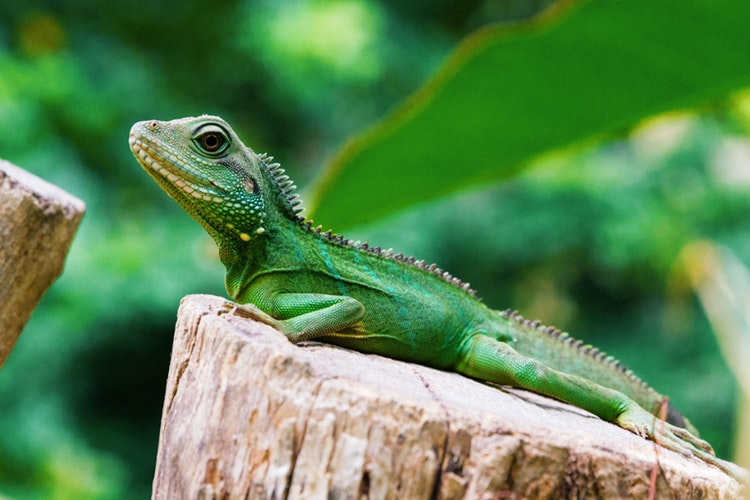
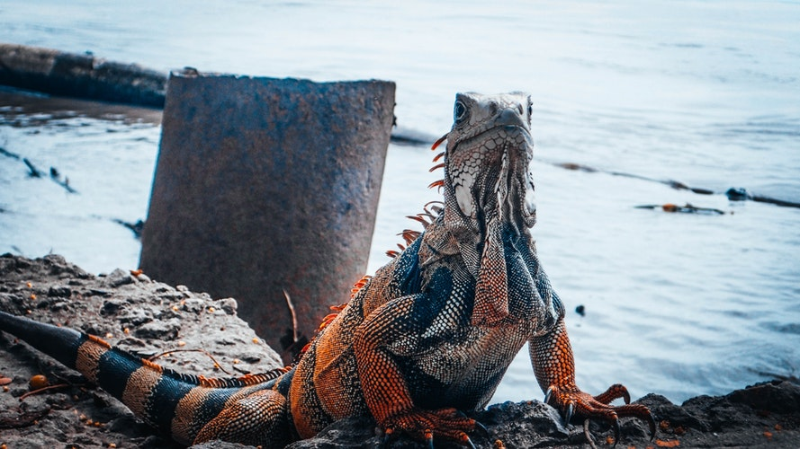
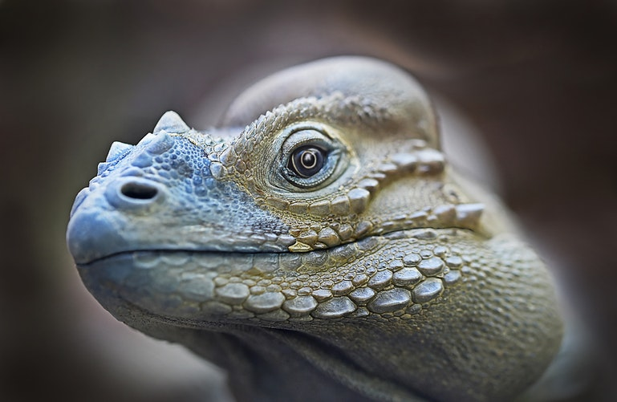
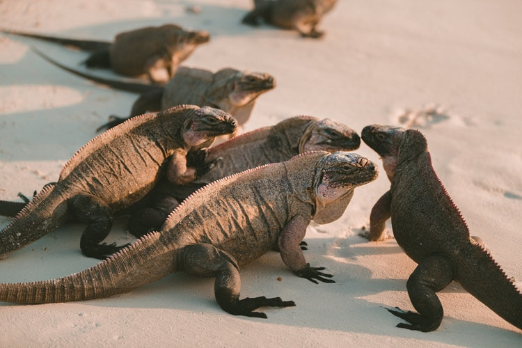

Herpetología & Fauna Neotropical
Familia Iguanidae
El Fascinante Reptil de las Copas Tropicales
Pertenecientes a los bosques húmedos y ecosistemas costeros de América, las iguanas son maestros de la adaptación solar, poseedoras de visión especializada y un porte imponente que preserva la esencia prehistórica en la naturaleza actual.
Conoce la evolución biológica que permite a este reptil dominar las alturas de los árboles y regular su temperatura con precisión asombrosa.
La iguana es un reptil perteneciente a la familia Iguanidae. Su tamaño promedio oscila entre los 15 cm al nacer hasta alcanzar impresionantes ejemplares de hasta 2 metros de largo con un peso que llega a los 15 kg en su etapa adulta.
Durante su juventud presentan una coloración vibrante en tonos verde esmeralda para mimetizarse eficazmente entre las hojas tiernas. Al madurar, su piel adopta matices grisáceos, pardos y anaranjados, desarrollando prominentes crestas dorsales espinosas que protegen su columna de depredadores aéreos.
Su dieta evoluciona con la edad: mientras que los ejemplares jóvenes consumen pequeños insectos ricos en proteínas, la mayor parte de su vida adulta son estrictamente herbívoras y folívoras. Habitan en densos bosques tropicales y húmedos con abundante vegetación.
Termorregulación Activa
Dependencia del sol matutino
Dieta Folívora
Hojas, flores y frutos maduros
Garras Trepadoras
Adherencia superior a ramas altas
Excelente Natación
Se sumergen para escapar de peligros

Iguana iguana • Ejemplar Maduro
Supervivencia & Sensibilidad
Rasgos Biológicos Únicos
Tres adaptaciones fisiológicas que convierten a la iguana en una de las criaturas más sorprendentes del reino de los saurópsidos.
El Tercer Ojo (Ojo Parietal)
Poseen un órgano fotorreceptor transparente en la parte superior del cráneo conocido como ojo parietal. No crea imágenes detalladas, pero percibe gradientes de luz solar y movimientos cenitales, alertando inmediatamente ante aves rapaces y regulando sus ciclos circadianos.
Conducta Serena & Territorial
A pesar de sus potentes garras y cola en forma de látigo, son animales predominantemente pacíficos y solitarios. Su interacción social se basa en rituales visuales: balanceo de cabeza y expansión de su papada gular para delimitar su espacio sin recurrir al combate físico.
Termorregulación & Camuflaje
Aunque no cambian de color como los camaleones, las iguanas modulan su pigmentación cutánea: oscurecen su dermis por las mañanas frías para absorber la radiación infrarroja rápidamente, y aclaran su tono a verdes o dorados al mediodía para evitar el sobrecalentamiento.
Registro Fotográfico
Galería de la Vida Silvestre
Haz clic en cualquiera de las fotografías para visualizarlas en alta resolución y conocer los detalles de cada ejemplar en su entorno.

Mimetismo Arbóreo
Iguana Verde en Dosel
Selva tropical húmeda • Camuflaje activo

Detalle Macro
Escamas & Papada Gular
Estructura dérmica protectora de queratina

Asoleamiento
Absorción Térmica
Basking solar matutino para metabolismo óptimo
Importancia Ecológica
Protegiendo los Ecosistemas Neotropicales
Las iguanas son polinizadoras secundarias y grandes dispersoras de semillas en los bosques de Centro y Sudamérica. Preservar sus hábitats riparios y de selva tropical es fundamental para salvaguardar la biodiversidad de todo el continente.